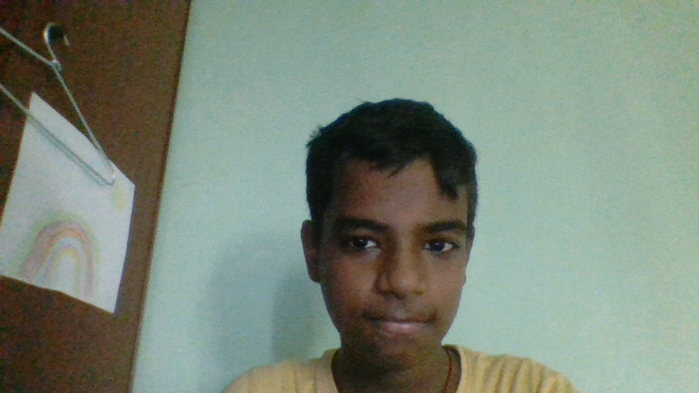

My Portfolio
Hi!

Im Ethihas, and I am 14 years
About Me
My hobby is playing cricket. Cricket is my favorite sport. When I get some free time after my studies,I go outside to the ground with my friends and play cricket. Cricket is the game which requires physical fitness. The running between the wickets, fielding within the ground and stress bearing during batting and fielding make my body fit and mind fresh. So, after playing cricket when I study, I can better grab the concepts. I also become delighted by playing cricket because I don’t waste my mind sitting in front of a computer or playing video games. Instead, I do some healthy activity. On every Sunday evening, I have two or three hours free. Mostly, I play cricket at that time. I have purchased my cricket kit. I also got another benefit
My second hobby is art and craft. I like to do new things by using paper and glue for example Thor's strombraker. I have made dragon,ballon,car,dinosaur,moveable human.
my thired hobby is karate. I am in brown belt in it and I have won 6 macths